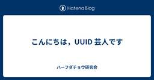
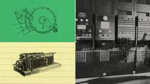

サイエンス直近7日・スコア順
このトピックだけを購読する: RSS

こんにちは，UUID 芸人です - ハーフダチョウ研究会 59
59
はてブ59
mimifuwacc.hatenablog.com（はてな IT人気）
サイエンス
こんにちは，都内で UUID 芸人をやっている id:mimifuwacc です． UUIDv4の衝突が話題になっているので，いいねした人にUUIDv4を配ろうと思います— mimifuwacc (@mimifuwacc) March 23, 2026 ついに UUID を配り終えたので，良いタイミングということで UUID の話をします． そもそも UUID とは まず，UUID について軽くおさらいしましょう． UUID (Universally Unique Identifier) は，時間的・空間的に一意であることを意図して設計された，128ビットの識別子です． 一般的には fa6c2…
18時間前

11年独身でも約9割は「人生の満足度」が高いままと判明 1 ナゾロジー
ナゾロジー
発見
サイエンス
親戚の集まりで「いい人はいないの？」と聞かれ、笑ってごまかした経験がある人も多いでしょう。 人の一生の歩みを説明する心理学の理論では、パートナーを見つけて結婚することが、人生の大事な目標として扱われてきました。 その一方で、一度も結婚しないまま年を重ねる人たちには、あまり目が向けられてきませんでした。 では、結婚せず恋人もいない暮らしを10年以上続けた人は、本当に年々不満をためていくのでしょうか。 今回の研究は、ドイツで11年間ずっと独身だった約3000人の記録をたどり、この問いに答えようとしたものです。 研究の詳細は、カナダのトロント大学らにより、2026年8月21日付で学術誌『Perso…
20時間前

バイキングの暴力を物語る「家の中の痕跡」を発見 ナゾロジー
発見
サイエンス
バイキングと聞くと、船で海を渡って各地を襲う、荒々しい戦士の姿を思い浮かべる人も多いでしょう。 実際、鉄器時代からバイキング時代にかけてのスカンジナビアは、戦士を重んじる考え方が広まった時代として知られます。 時代でいえば、紀元前500年ごろから西暦1050年ごろまでにあたります。 ところが意外なことに、当時の墓地に眠る人々の骨には、けがの跡が比較的少ないことが知られてきました。 荒々しい時代のはずなのに、暴力の跡はどこに残されていたのでしょうか。 国際研究プロジェクト「BODY-POLITICS」のチームは、その答えを墓地ではなく、人々が暮らした家の中に探しました。 家の炉や床下から見つか…
9時間前

ナスカで300点超の地上絵が新発見 AIが考古学のゲームチェンジャーに (ナショナル ジオグラフィック) 日経ビジネス電子版 最新記事
日経ビジネス電子版 最新記事
発見
AI・LLM / サイエンス / ビジネス・公共
1926年に始まったナスカの地上絵の研究から100年。山形大学の研究チームはAIで新たに300点超特定。小道沿いに並ぶそれらは旅人へのメッセージだった可能性がある。
1日前

「水金地火木土天海」は太陽の死で崩れる――惑星の並びが壊れる仕組みを発見 ナゾロジー
仕組みを掘る · 発見
サイエンス
子どもの頃に覚えた「水金地火木土天海」は、大人になった今もすらすら口から出てきます。 太陽系の惑星の並びは、それほど当たり前で、動かないものに見えます。 けれども太陽にも寿命があり、いずれ外側のガスを宇宙へ吐き出して、小さな燃えかすの星になります。 そのとき、木星・土星・天王星・海王星という外側の4つの惑星はどうなるのでしょうか。 これまでは、太陽が死んだあとも、4つの惑星は途方もなく長いあいだ無事だと計算されてきました。 ところが新しい研究は、その計算が、ある前提に寄りかかっていたと指摘しています。 太陽の最期に、外側の惑星たちに何が起きうるのかを見ていきます。 研究の詳細は、2026年9…
2日前

Designing more efficient quantum circuits with Claude
AI・LLM · フロントエンド・デザイン · サイエンス
Anthropic ResearchAI・LLM / フロントエンド・デザイン / サイエンス
Working largely on its own, Claude designed quantum circuits that improve on the best published versions, in some cases by an order of magnitude or more.
2日前

プライベートクラウドにおけるVM Live Migrationの通信暗号化の実装と検証（インターンレポート） 1LINEヤフー Tech Blog (LY Corporation Tech Blog
組織・マネジメント・QA · サイエンス
組織・マネジメント・QA / サイエンス
こんにちは。慶應義塾大学大学院工学研究科人間・社会システム情報科学専攻の菱田快成です。私はIaaSチームのインターン生としてプライベートクラウド「Flava」におけるOpenStackを中心とした仮想...
4日前

表形式データ向け基盤モデルNVIDIA Kumo Tabularの紹介 松尾研究所テックブログのフィード
松尾研究所テックブログのフィード
設計・SRE・基盤 · サイエンス
設計・SRE・基盤 / サイエンス
はじめにこんにちは、松尾研究所の鈴木明作です！2026年9月にNVIDIAから公開された、高性能な表形式データ向け基盤モデル（事前学習済みモデル）であるKumo Tabularについて紹介します。 TL;DRNVIDIAから表形式基盤モデルのKumo Tabularが公開され、複数の表形式データ向けベンチマークにて1位を獲得しました。表形式データにおけるIn-context Learningにより、モデル更新を伴う再学習はせずに推論が可能です。商用利用可能ライセンスな表形式データ基盤モデルです。 Kumo TabularとはKumo Tabularは、Tran...
4日前

プレスリリースから紐解く｜リサーチエバンジェリストによる富士通研究所TECH UPDATE✨（FY26-2Q＋α） fltech - 富士通研究所の技術ブログ
fltech - 富士通研究所の技術ブログ
サイエンス
サイエンス
富士通のテクノロジーのプレスリリースで研究所が対外的にお知らせしたホットトピックスを俯瞰し、要点をリサーチエバンジェリストの視点からお届け。 今回の内容は、量子のいろいろな話題、CPUの話題と、CEATEC予告です。
5日前

オーガナイズドセッション「偽情報対策技術」をWebDB夏のワークショップ2026で開催しました fltech - 富士通研究所の技術ブログ
セキュリティ · サイエンス
セキュリティ / サイエンス
こんにちは、セキュリティサイエンス研究所の佐々木です。2026年9月15日（火）から17日（木）まで、大阪公立大学りんくうキャンパスで開催されたWebDB夏のワークショップ2026でオーガナイズドセッション「偽情報対策技術」を開催しましたので、その内容についてご紹介します。
4日前